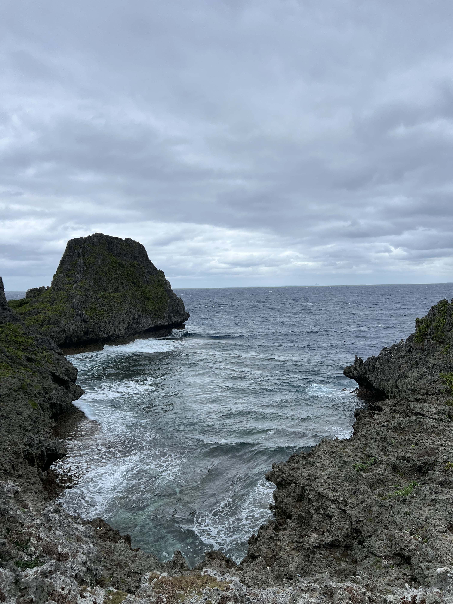

Infinite World of the Okinawan Ocean

Description
My world is a river with rocky mountains. The photo I chose was a picture I took while I was in Okinawa.I used the infinite extent of my world to represent a river with a rocky mountain-like terrain.As the audience browses my world, they'll see rivers and rocky terrain of varying heights. Different worlds will have different river and mountain sizes. Clicking tiles causes wooden bridges to be placed but only on the water blocks.
Technical
I utilize a combination of procedural generation algorithms to create a dynamically evolving virtual landscape. The core of the experiment lies in the unique hash value generated from user interactions seeds the procedural algorithms. Using the XXH32 hashing function and p5.js's built-in noiseSeed and randomSeed methods, each input generates a distinct visual output on a grid of tiles. Each tile, depending on its hashed value, displays different shades and shapes, responding to clicks by altering its appearance and opacity. The technical architecture is designed to mimic infinite possibilities within a contained digital ecosystem, allowing each user's journey through the landscape to be unique and personal. The setup leverages JavaScript's flexibility and the p5.js library's graphical capabilities to render a responsive and interactive artistic piece.